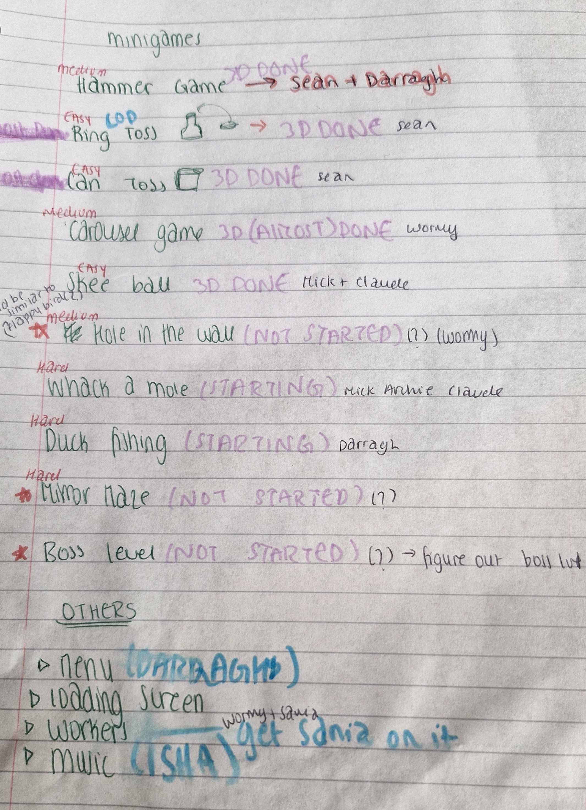

Earlier in the week we decided on our group for the project, and we got together for a meeting yesterday to discuss
ideas for the game. The final group is: Darragh Griffin, Claude Powell, Sonia Malik, Warda Abassi, Sean Nealon, Archie Dumas, Corey Bowden and Mick Lawlor.
As we were two groups that merged, a wide array of idea were discussed. Originally, Darragh, Claude and I were looking at a survival game,
taking inspiration from the likes of DayZ. The others had a few ideas in mind but hadn't settled on one in particular. They were very interested in the
idea of a horror game, so we started trying to come up with settings for that. We eventually settled for a horror game set in a carnival or circus as there is a lot we could
explore there, but we still need to work out some final details.
Log 2: feb 7th, finalising our idea
Today we met up in the library again to finalise some of the details for our game.The idea of involving carnival rides or
games, in some way, was interesting to us so I suggested that we could do something "Saw-like" and make the games have consequences
or be a part of how you progress through the game. We also decided to go with unity as the engine as it is beginner friendly, and 3D, as Sean said he had prior experience with blender and 3D modeling.
While it will be tough, I think it will be a fun and interesting learning experience to try and make a 3D game, especially as I have no previous
Experience. I'm excited to see how this goes!
Log 3: feb 13th, delegating tasks
We held another meeting today to discuss ideas for the mini-games we would like to include, and to delegate some tasks to the group.
Our producer, Warda, drew up a to-do list giving us each a job to do. It was decided that Sean, Darragh and Archie would do the pitch document,
while the rest of us were assigned mini-games to complete. We went with 3 sets of 3 mini-games, getting progressively creepier, to ease the player
into the game. We also told our lecturer, Gavin Wade, about our idea for the game which he thought was interesting. However, he also mentioned as it's a horror game
that we will have to make sure we follow any guidelines on publishing platforms and include warnings if they are needed. It's very important to
us that we adhere to any rules as we don't want to get in trouble, or give the college a bad image, by publishing a game that is not suitable for a release.
Log 4: feb 25th, starting 3D modeling
As I don't have prior experience with 3D modeling, I spent a lot of time this week watching tutorials for blender and trying
to figure out what would be the best way to make the models for skee-ball. While I was able to learn more about the programme,
I thought it would be useful to try and use tutorials that were more specific for my needs. I used an arcade machine as reference for the back
of the skee-ball machine, and found a tutorial for a half-pipe ramp which I found very helpful for the ramp part.
I found it quite difficult to learn blender as the interface is quite complicated and a lot of the tools I needed were hidden in sub-menus, so it massively sped up progress following these tutorials, although it was very interesting!
Once I had most of the skee-ball machine made I played around with the materials to try find a nice look for the game.
We also talked to our lecturer Gavin Wade about the idea for the game again, and he suggested cutting one of the earlier mini games to have a
quicker start to the game and prevent it being boring or slow. We haven't yet decide which mini-game we will change, but we are going to
change the order to take his advice on board.
Here are some of the tutorials I found helpful:
Log 5: march 5th, starting in unity
This week was tight for time as we had 2 mid-terms, but I got the modeling finished and I'm happy with how it turned out.
Adding the rings took a bit of time to figure out, but once they were finished I imported the model to unity so we could start work on
the game. It was a relief to finally move on to unity, and start work on the code, but I had to reapply some materials in unity as they didn't come through from blender. I also started to work on the code for
the targets and how the ball would interact with the machine. I think the best way to do it could be to have box colliders in each ring to detect collisions
and to get the ball to despawn once it's in contact with a target. I couldn't find much online to help me as a lot of the tutorials are for 2D but they are the same ideas, so it was a lot of trial and error, trying
to figure out meshes and physics in unity. I also added a textMesh and a custom font which can later be used as a scoreboard, its placed infront of the middle
machine and I positioned the camera so it looks like it is on the machine.
Log 6: march 12th, skee-ball development
Claude sent me the code he had been working on for skee-ball so we could start to implement it and test our game. He had been working on a ball launching mechanism which we can use as a base
to work off, but it only fires in a straight line at the moment as the cameras position is locked. We were expecting to run into some issues as we hadn't tried to make something like this before, and there are a few bugs we need to
work out but thankfully nothing too major as the basic parts of the game still work. The main issues we are having are still with physics, as the ball is clipping through the machine but it shouldn't take long to fix.
However while there is progress being made I'm not sure how far into this games development we will get as the 3D aspect, in particular, and our lack of experience have slowed us down.
We asked Gavin Wade if the final product of the game would affect our grade as we felt more progress could've be made in 2D, but were
told that it won't affect our grade as it's just the diary that is graded and were advised to just continue with development instead of trying to switch.
Log 7: march 20th, improving physics and scoreboard
All of the trouble I was having with the physics was luckily a few simple fixes. It was mostly just making sure the right colliders were applied,
and that the right physics were being applied to the ball. It took a bit longer to fix than I would've liked, but I wanted to try and see if I could solve it myself
before I looked at some tutorials. Unitys error messages were Quite helpful with most problems I've had but I stuggled to get the targets working as I was having issues with the tags.
It was just a small error in my trigger code where it wasn't comparing the tags properly but I found this tutorial very helpful for the problems I've had so far. I've found that
the best way to learn during this project is to do as much as possible yourself, through trial and error, and then find resources to help fill in the gaps. While I still wouldn't say I'm skilled yet, I feel
much more confident in my abilities to take on projects like this, and overcome the challeges faced, compared to the start of this project.
I also managed to get the scoreboard linked to the targets, but my score was reseting after every throw as it was attached to the ball. So I had to make a seperate score tracking script,
which i just attached to an empty game object, to make it keep track of, and add up your score which is then displayed on the machine. It's not a priorty right now as I feel we are tight for time as a group,
but if I have a chance, at the end, I would like to come back and add something that keeps track of your highscore between games so you can try beat yourself each time you play!
Log 8: march 26th, game presentation
Earlier in the week we gave our presentation for our game during the lecture. We sent some screenshots of our work to our producer, Warda, to compile into a slideshow and met up as a team the morning of the presentation to give everything one last run through.
We didn't have as much detail included as I would have liked, as I honestly think we could have shown our game in a more complete way. We could have benefited from having
less humor during the presentation, while it definitely got the class interested it took away slightly from our actual development. Overall though, the reception was good, with most people saying they would buy the game.
The main critisism was the lack of info on the game, which is definitely something we can improve on for any future promotional content.
Log 9: march 30th, finishing skee-ball and starting next mini-game
The only thing left to finish in skee-ball was making a way to aim where you want to shoot. I decided to make an arrow model in blender, to be used to show where
the player is aiming. As I made the arrow vertically in blender, I had to rotate it in unity, which caused some issues with where the ball was firing as I had to change Claudes code from aiming from the camera, to the arrow.
I used a similar idea as what I learned from the scoreboard, where I used an empty game object to rotate the arrow around, which the player controls with the left and right arrow (or a/d), and use its axis' for the balls direction.
I also added a backgorund, and changed the code Claude gave me for the balls arc, so that it rolls up the ramp rather than firing forwards. Now that it's finished I can move onto the next mini-game, and for my first game,
I'm happy with how it's turned out. I've also attached some quick gameplay below!

We also had a team meeting again this week to discuss how we would break down the remaining work. Following on from Gavin Wades advice, the mini-game we decided to cut
was hole in the wall. It just seemed like it had the least potential for any added elements and like it would be the least engaging one of those remaining. We then wrote up
another list giving the breakdown of the work.
Log 10: april 8th, assets for whack a mole
After we assigned the work in the last meeting, Archie said she would take the code for whack a mole while I made the assets to try and speed up progress. To try and add a "horror" aspect to the game
I made a zombie head that can be used to randomly pop out instead of the mole, as long as its not too frequent, it could be used as a jump scare or just to add to the horror feeling. I realised that the reason I previously had
issues with textures in blender was because I wasn't using the texture paint and uv editing modes. I also used the sculpting mode this time to make the models as it gave me more control and allowed me to learn more about blender. After watching
a video about textures, I also experimented and made a custom wood texture for the handle of the hammer. Even though I was using some new tools, I felt much more comfortable with blender than I did when I used it
at the start of skee-ball and I feel like I would be capable of using it well in future projects. However, while he was assigned a different game, Sean had also started making the whack a mole machine, but not the other assets. It won't affect either of our work, but it's a lesson that
good communication within our group is important so we can maximise the work done.
Log 11: april 15th music and final assets
Archie has the code for whack a mole done, so I sent over the assets so it can all be put together. We were trying to figure out music for the game so I made some ambient sounds with circus music playing.
I tried to make it sound like it was coming through a broken speaker to try and give the impression the carnival is abandoned and add to the feeling of the game. I thought using the classic circus melody "entry of the gladiators" would work well,
I made sure to check, and it's in the public domain, so i'm free to use it in my own work. I've attached the sound below!
As we are close to the deadline and starting to put everything together, Sean and I are going to try and finish off some more assets for the general environment. There is a few more we want to do, which we might not get all done,
but we are going to try get as much extra added as possible before the deadline.